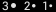

Debris stories
The following linear dendrogram visualizes the 10 biggest groups of debris occurred
in space so far. Most of these fragments belong to launch vehicles, rockets, or rocket stages: the majority of
in-orbit fragmentation is caused by the explosion of spacecraft or upper stages.
The main cause of in-orbit explosions is related to residual fuel that remains in tanks or fuel lines, or
leftovers of energy sources, that remain on board once a rocket stage or satellite has been discarded in Earth
orbit. Over time, the harsh space environment can reduce the mechanical integrity of external and internal
parts, leading to leaks and/or mixing of fuel components, which could trigger self-ignition. The resulting
explosion can destroy the object and spread its mass across numerous fragments with a wide spectrum of masses
and imparted velocities.
Of the events recorded since 1961 (more than 560), only 7 were due to collisions among satellites. Besides
accidental break-ups, satellite interceptions by surface-launched missiles have been a major contributor in the
recent past.
Top 10 space debris
STATUS: Active Decayed
Active debris refer to non-payloads space objects orbiting Earth as of March 6th, 2022.
Radar Cross-Section size:

RCS indicates how detectable an object is by radar. The value depends not only by the real size of the debris but also by reflectance and material. The higher RCS value, the higher detectability.
CHINA, 1999-
3,531 debris (19% decayed, 81% active)
Fengyun 1C was a Chinese weather monitoring satellite operated in a Sun-synchronous orbit. Launched on May 1999 at an altitude of 850 km (LEO), it was destroyed by a kinetic vehicle during a Chinese ASAT (Anti-Satellite) test on 11 January 2007, probably launched from the Xichang Satellite Launch Center. The collision produced a debris cloud of 4,000 trackable debris, and about 40,000 of smaller size (therefore untrackable). It was the first known successful satellite intercept test since the 1980s, when the United States and the Soviet Union both destroyed their satellites in space.
• NASA: Evolution Of The Debris Cloud Generated By The Fengyun-1c Fragmentation Event (2007)
• Space.com: China's Anti-Satellite Test: Worrisome Debris Cloud Circles Earth (2007)
UNITED STATES, 1960-
1,785 debris (46% decayed, 54% active)
The Delta is an American family of launch systems (rockets) in use by the United States since 1960. The Delta rockets were based on a modified ballistic missile deployed by the US Air Force. Most satellite launches with the Delta 1 series were successful. However, a 1978 study by Donald Kessler found that 42% of cataloged debris was the result of 19 events, primarily explosions of spent rocket stages (especially US Delta rockets). The greater part of those fragments are still orbiting today.
• Astronautix: Delta
• Wikipedia Kessler syndrome
Commonwealth Of Independent States, 1964-
1,158 debris (99.8% decayed, 0.2%
active)
The Soyuz is a Russian and Soviet family of carrier rockets in use since 1966. Deployed for the Soyuz spacecraft and the International Space Station, it is the most frequently used launch vehicle in the world (as of 2021). The US designation is a short code with the letters SL followed by a number representing the series. SL-4 refers probably to the Vokshod and Soyuz M-U launch vehicles. The debris are likely to be rocket bodies still to reenter the atmosphere.
• Russian Space Web: Soyuz
• Globalsecurity.org: Soyuz
United States, 1965-
625 debris (72% decayed, 28% active)
The Titan was an American family of expendable rockets used between 1959 and 2005. Titan I and Titan II were part of the US Air Force's intercontinental ballistic missile fleet until 1987. Titan IIIC was an orbital launch vehicle used by the United States Air Force from 1965 until 1982. It mainly carried military communications satellites, exclusively launched from Cape Canaveral. Launched in 1965, the Titan 3C Transtage 5 upper stage is known to have fragmented four times. Two of the four fragmentations were in GEO while the Transtage fragmented a third time in GEO transfer orbit. The fourth fragmentation occurred in LEO. A quarter of its debris is still orbiting today.
• Astronautix: Titan IIC
• NASA Paper: Titan IIIC Transtage Fragmentations
Commonwealth Of Independent States, 1993-
1,713 debris (38% decayed, 62% active)
Kosmos 2551 was a Soviet Strela military communication satellite launched from the Plesetsk Cosmodrome on 16 June 1993. It ceased functioning two years later, and it remained orbiting at about 800 km of altitude, in Low Earth Orbit. Years later, on 10 February 2009, the Soviet satellite collided with a satellite from the American Iridium 33 constellation. The two satellites collided at almost right angles to each other, and at a relative speed of nearly 10 km/s: the impact produced about 2,000 pieces of debris, measuring at least 10 cm, and many thousands more smaller pieces. There was no warning issued of a potential collision, even if both the U.S. and Russian military had accurate tracking data on the two satellites well before the event.
• Secure World Foundation: 2009 Iridium-Cosmos Collision Fact Sheet
• NASA Technical Report: The Collision Of Iridium 33 And Cosmos 2251 (2009)
United States, 1994-
767 debris (90% decayed, 10% active)
Pegasus is the first successful air-launched orbital launch vehicle. Designed by the American Orbital (later Orbital ATK and Northrop Grumman Innovation Systems) in the early 90s, it is a three-stage solid fuel rocket launched by a dedicated aircraft. The Pegasus launched in 1994 carried the APEX payload, which tested the use of photovoltaic and electronic components in space.
• Gunter's Space Page: Pegasus
Commonwealth Of Independent States, 1967-
676 debris (62% decayed, 38% active)
The Russian Proton is an expandable launch system used for both commercial and government space launches. Manufactured in 1965, it is still in use today. As with many Soviet rockets, the names of recurring payloads became associated with the launch vehicle itself. The moniker "Proton" originates from a series of similarly named scientific satellites, which were among the rocket's first payloads. During the Cold War, Proton K was designated as SL-12 by Western intelligence agencies. The SL-12 fourth-stage rocket bodies offer a convenient ensemble of objects for which photometric techniques can be developed and tested.
• Int'l. Orbital Debris Conf. (2019)
France, 1979-
554 debris (87% decayed, 13% active)
Ariane 1 was the first rocket in the Ariane family of expendable launch systems. Its first launch happened on Christmas Eve, 1979, from Europe’s Spaceport in Kourou, French Guiana. Ariane 1 was the first launcher to be developed with the primary purpose of sending commercial satellites into geosynchronous orbit.
• European Space Agency: Ariane vehicles
• Wikipedia: Ariane 1 Maiden flight
Commonwealth Of Independent States, 1993-
1,561 debris (20% decayed, 80% active)
Cosmos 1408 was a Soviet ELINT (Electronic and Signals Intelligence) Tselina-D satellite launched from the Plesetsk Cosmodrome in 1982. It was designed to determine the precise location, activity, and other details of radio emitters. Data would be stored onboard and downloaded to Soviet ground stations. Two years later, it stopped working. The satellite was destroyed in a Russian anti-satellite weapon test on 15 November 2021, resulting in thousands of space debris in orbits between 300 and 1,100 km above the Earth. The crew of the International Space Station (ISS) was forced to take shelter in their escape capsules for the first few passes of the debris cloud. The international community condemned Russian action as irresponsible and harmful.
• NASA Factsheet
• Wikipedia: Kosmos 1408
United States, 1969-
696 debris (49% decayed, 51% active)
The Thorad-Agena was an American expendable launch system, derived from the Thor and Delta rockets, designed by Douglas Aircraft Company (today McDonnel Douglas). The first stage of the rocket was a variant of the Thor model, while the second stage was the Agena D. Most of the Third Agena launches carried Corona reconnaissance satellites. 43 launches took place from 1966-72 with two complete failures and one partial.
• Wikipedia: Thorad Agena
• Gunter's Space Page: Orbital launches of 1969
United States, 1997-
656 debris (49% decayed, 51% active)
Iridium 33 was part of an American commercial communications network comprised of a constellation of 66 spacecraft in LEO. Launched in 1997 from the Baikonur Cosmodrome in Russia, commercial services began one year later. On 10 February 2009, the satellite collided with Cosmos 2551, a derelict Soviet military communication satellite, no longer functional since 1995. The two satellites collided at almost right angles to each other, and at a relative speed of nearly 10 km/s: the impact produced about 2,000 pieces of debris, measuring at least 10 cm, and many thousands of smaller pieces. There was no warning issued of a potential collision, even if both the U.S. and Russian military had accurate tracking data on the two satellites well before the event.
• NASA factsheet
• NASA Technical Report: The Collision Of Iridium 33 And Cosmos 2251 (2009)